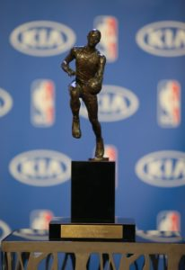

Awards
MVP
The most valuable player award is given to the player that had the best regular season. The viewers of the NBA vote for who they believe deserves the MVP trophy. The MVP is one of the highest achievements that a player can have.
Championship
When a team wins an NBA championship they recive the Larry O'Brien NBA Championship Trophy. The players and staff of the team can also be offered to recive a ring, the players and coaches recive more expensive rings.
Rookie of Year
The rookie of the year award is given to a young player in their first year which had the best performance standing out from all of the other rookies.
Most Improved Player
This award is for a player which is voted to have the most improvement comparing his previous seasons to his current one.
Finals MVP
The finals MVP is given to the player who has the best performance in the finals series.
Coach Of The Year
Defensive Player Of The Year This award is for the player who is voted to have the best defence in the NBA during the regular season.
Sixth Man Of The Year
This award is given to the best player coming off the bench
Citizenship Award
The citizenship award is given to the team member which supports the community the most
Teammate of The Year
Awarded to the "ideal teammate" who exemplifies "selfless play and commitment and dedication to his team" as voted by NBA players.
Hall of Fame
The Naismith Memorial Basketball Hall of Fame is for players who have shown exceptional skill at basketball
All star MVP
The All Star MVP award is given to the player that has the best preformance during the NBA all star game.
Confrence Finals Champions
The team that wins the confrence finals recive a confrence finals trophy, each confrence has one trophy.
